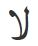

Lateef - Frequently Asked Questions
Many questions can be answered by consulting the following FAQ pages. Here are a few sample questions answered in each FAQ:
- SIL fonts in general
- How can I type...?
- How can I use font features?
- Will you add support for character...?
- Will you add support for script...?
- WIll you help me...?
- The SIL Open Font License (OFL-FAQ)
- Can I use this font for...?
- Can I modify the font and then include it in...
- If I use the font on a web page do I have to include an acknowledgement?
- The full OFL-FAQ.txt is also included in the font package.
A generic FAQ for all of our Arabic scripts fonts can be found here: Arabic Fonts - FAQ. FAQ's specific to Lateef are found below.
What are the differences between the Lateef and LateefGR fonts?
The most obvious difference is that Lateef only provides OpenType support and LateefGR only provides Graphite support. For a complete list of the differences, you can read the Release 1.200 announcement.
This beta version of Lateef is an OpenType font that includes all the kerning support that is currently only found in LateefGR. It also includes many more characters than were in LateefGR.
What characters are included with this release?
See Character Set Support for the full listing.
I notice that Lateef is missing a number of characters that I would like. Will you add these?
It is impossible for us to add every glyph that every person desires, but we do place a high priority on adding complete coverage of all the characters defined in Unicode for Arabic script (excluding the Arabic Presentation Forms blocks, which are not recommended for normal use). You can send us your requests, but please understand that we are unlikely to add symbols where the user base is very small, unless they have been accepted into Unicode.
What is so special about Lateef?
Lateef is designed in an appropriate style often used for Sindhi and other languages of southern Asia. This font is designed to work with the OpenType font technology. To take advantage of the advanced typographic capabilities of this font, you must be using applications that provide an adequate level of support for OpenType. These advanced capabilities provide access to the variant character forms used in some languages. See Smart Font Features.
What makes Lateef specifically "Sindhi-style"?
- The lam-alef ligature is designed in a Sindhi-style: 
- Diacritics on isolate and final forms of characters are left offset to the nukat: